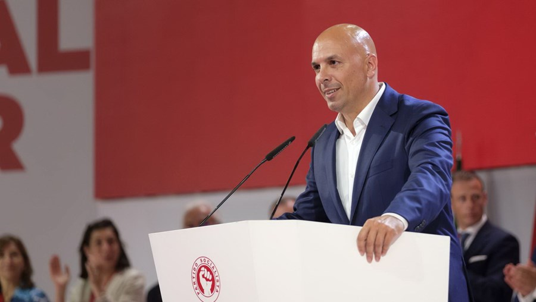

PS/Madeira apela ao representante da República para não legitimar "regime podre"
O PS/Madeira apelou este sábado ao representante da República para a região para não nomear um novo Governo Regional sem a realização de eleições antecipadas, vincando que, caso contrário, Ireneu Barreto estará a legitimar um "regime que está podre". "Não acredito que o senhor representante da República vá passar um cheque em branco, porque o PPD/PSD nem sequer apresenta quem seria o líder de um Governo a ser nomeado até a realização das eleições antecipadas", disse o presidente da estrutura regional do PS, Paulo Cafôfo.
O dirigente socialista falava no âmbito de uma reunião da comissão política do partido, no Funchal, na qual foi abordada a crise política na região autónoma, na sequência da exoneração do presidente do Governo Regional (de coligação PSD/CDS-PP, com apoio parlamentar do PAN) e consequente demissão do executivo, após Miguel Albuquerque ter sido constituído arguido num processo que investiga suspeitas de corrupção na Madeira.
Paulo Cafôfo defendeu que o atual executivo demissionário deverá manter-se em gestão até à marcação de eleições pelo Presidente da República, o que só poderá ocorrer a partir de 24 de março, quando a Assembleia Legislativa cumpre os seis meses de posse legalmente exigidos.
Gostei muito desse article.
10/02/2024 - 14:23 by Anymous Viewer
Muito bom.
10/02/2024 - 14:12 by Armando Silva
Já sabiamos disso tudo.
11/02/2024 - 09:45 by Rita Correia